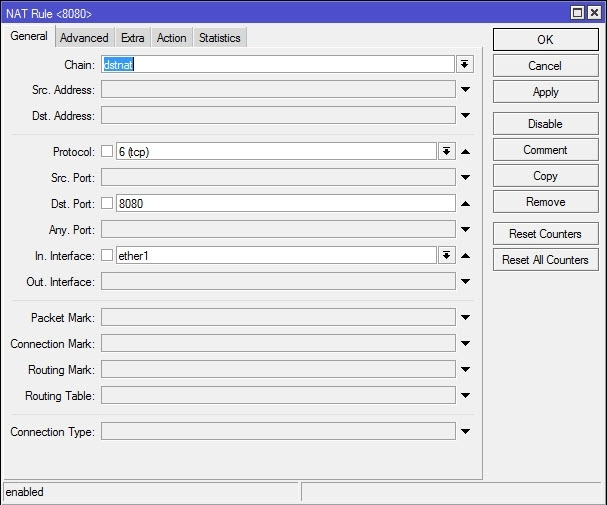
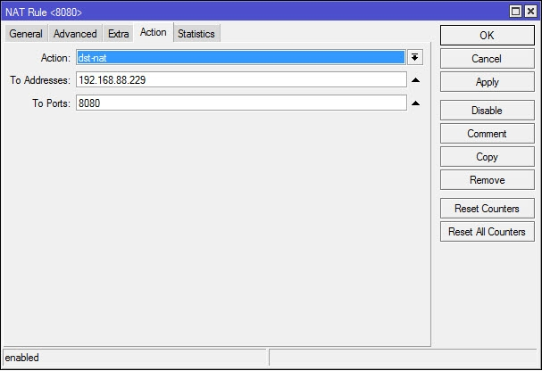
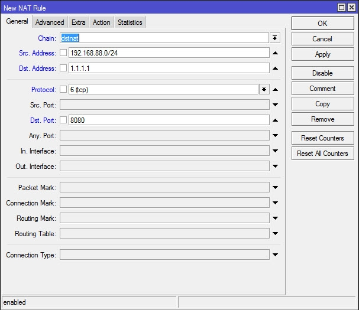
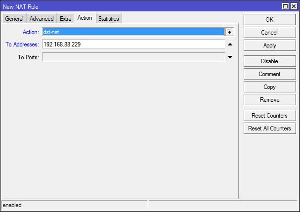
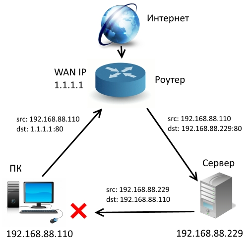
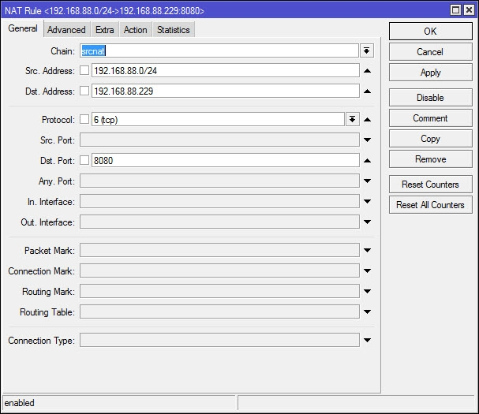
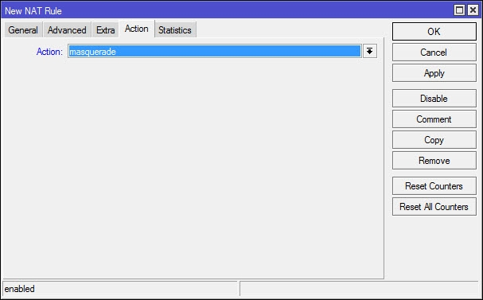
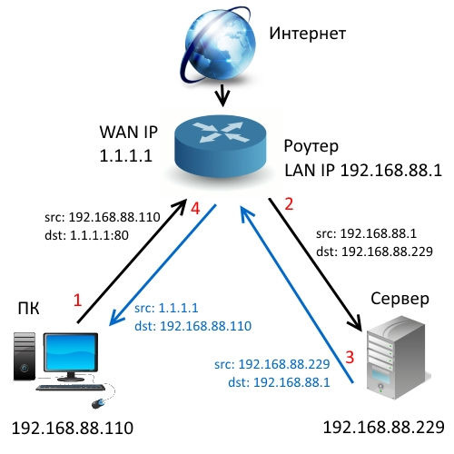
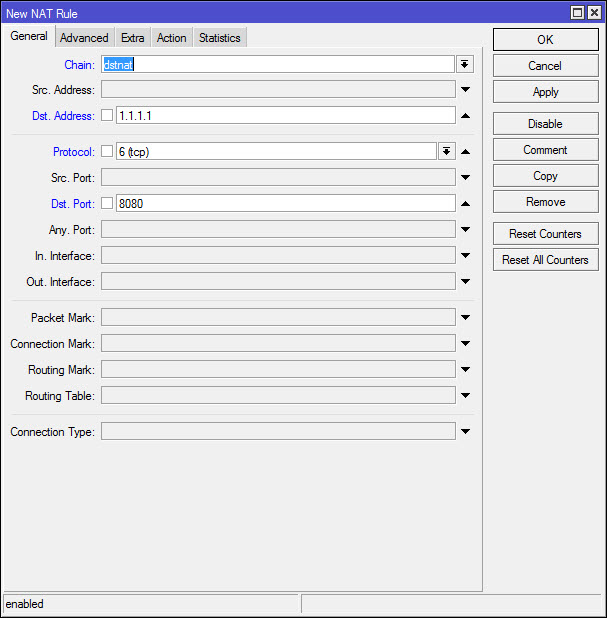

Как зайти по внешнему IP-адресу из локальной сети для MikroTik
Допустим, вы настроили проброс портов на роутере MikroTik, и из внешней сети все прекрасно работает. Но иногда может возникнуть необходимость организовать доступ к компьютеру или серверу по внешнему IP-адресу не только извне, но и из локальной сети. В этом случае применяется так называемый Hairpin NAT или NAT LoopBack - прием-отправка пакетов через один и тот же интерфейс роутера, со сменой адресов с локального на внешний и обратно. Разберем нужные настройки.
Допустим у нас есть:
У нас уже есть настроенное правило проброса порта 8080:


Но оно не будет срабатывать при обращении из локалки, так как настройки ориентированы на пакеты из внешней сети, через WAN-порт. Поэтому нам нужно прописать дополнительно еще 2 правила.
Настройка доступа из локальной сети по внешнему IP-адресу
1. Создаем правило для перенаправления обращений по внешнему IP из локальной сети.
Вкладка General.
Chain - dstnat.
Src. Address - пишем здесь локальный адрес компьютера, с которого будем заходить по внешнему IP, или диапазон адресов, если такой доступ нужно предоставить нескольким компьютерам сети.
Dst. Address - указываем внешний адрес компьютера/ сервера и т. п., по которому будет осуществляться доступ из локалки.
Protocol, Dst. Port - здесь прописываем параметры порта и протокола, которые соответствуют нашему соединению (те же, что и в пробросе портов).

Вкладка Action.
To Addresses - указываем локальный адрес нашего сервера, компьютера, на который мы заходим по внешнему IP-адресу.
To Ports - порт тот же самый, что на предыдущей вкладке, поэтому здесь можно ничего не указывать.

Теперь на компьютер 192.168.88.229 можно зайти из локальной сети по внешнему IP-адресу 1.1.1.1.
Но при попытке какого-то взаимодействия с ним ничего не получится. Почему? Посмотрим, что происходит.

Поэтому нам нужно еще одно правило, которое будет подменять локальный адрес источника при отправке пакета на внешний IP.
2. Подменяем локальный адрес компьютера на внешний IP-адрес.
На вкладке Action выставляем маскарадинг (masquerade), т. е. подмену адреса источника на локальный адрес маршрутизатора.
На вкладке General прописываем правила, при которых он будет применяться:
Chain - srcnat, т. е. при запросах из локальной сети.
Src. Address - пишем здесь локальный адрес компьютера, или диапазон адресов, с которых будут отправляться пакеты.
Dst. Address - здесь конкретизируем "адрес получателя", т. е. правило будет применяться только для пакетов, адресованных нашему серверу.
Protocol, Dst. Port - здесь прописываем те же параметры порта и протокола.


Теперь, получив пакет из локальной сети, адресованный на внешний IP 1.1.1.1, маршрутизатор не только перенаправит его на 192.168.88.229 (по первому правилу), но и заменит в пакете адрес источника (192.168.88.110) на свой локальный адрес.
Ответ от сервера поэтому отправится не напрямую в локальную сеть, а на маршрутизатор, который, в свою очередь направит его источнику.

Второй способ Hairpin NAT MikroTik: 2 правила вместо 3
Можно сделать еще проще, заменив правило проброса портов первым правилом Hairpin NAT. В этом случае в настройках не нужно указывать In. Interface и Src Address, но нужно прописать адрес назначения.

Доступ на внешний IP адрес вашего сервера или компьютера с приложением будет открыт как для обращений извне, так и из локальной сети, с любых адресов, но только для пакетов с адресом назначения 1.1.1.1:80.
Теперь добавляете описанное выше правило srcnat, и все. Можно добавить дополнительную фильтрацию, прописав в out-interface тот интерфейс, с которого будут осуществляться отправки пакетов, если есть такая необходимость.
Недостатком Hairpin NAT является только то, что нагрузка на роутер возрастает, ведь те обращения, что раньше проходили через локальную сеть непосредственно между компьютерами, теперь будут идти через маршрутизатор.
Второй способ проще, но, в зависимости от конфигурации вашей сети, может использоваться и первый.
UPD: мы протестировали еще раз изложенные в этой статье способы настройки на примере организации FTP-сервера, а также настройку, предложенную в комментариях. Все они рабочие.